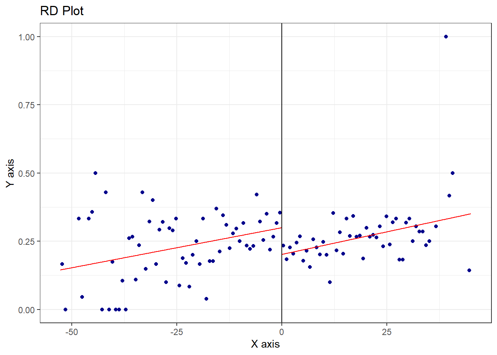

salud <- read_csv("../files/salud_peru.csv") %>%
filter(formal==0) %>%
mutate(ifh_norm=ifh-corte,
abajo_corte=ifelse(ifh<=corte, 1, 0))Respuestas a la tarea 4
Pregunta 1
Los datos del archivo salud_peru.csv contienen información de una encuesta en hogares realizada en Perú. Un programa del gobierno otorgó un seguro de salud para cubrir a hogares de trabajadores informales y pobres, típicamente excluidos de los servicios de salud. Para ello, se uso un índice de ingreso (IFH), expresado en soles, para determinar la elegibilidad. Aquellos hogares con un IFH menor o igual a 55 soles son considerados pobres. Se desea estimar el efecto del programa en la probabilidad de recibir algún tipo de anteción médica, curative, y sobre la probabilidad de recibir algún tipo de asistencia médica en un hospital o con un doctor, hospinter. La columna ifh contiene el indicador del ingreso.
[10 puntos] Genere una gráfica donde muestre evidencia de una discontinuidad en la variable curative para aquellos hogares que recibieron los beneficios del programa. Debe usar solo a los trabajadores informales, formal==0. Primero, realice la gráfica con una ventana de 100 soles a la izquierda y 100 soles a la derecha del corte de elegibilidad y en la que cada punto represente la media de la variable curative en bins de 5 soles. Agregue una línea de regresión lineal para cada lado del corte de elegibilidad.
Nota: Esta pregunta estuvo basada en el estudiod de Bernal, Carpio & Klein (2017).1
Construimos un indicador de elegibilidad:
Partimos la muestra en grupos de cinco soles:
salud <- salud %>% mutate(bin5=cut(ifh, breaks = c(seq(from=0, to=100, by=5))))Construimos la proporción con curative==1 en cada grupo:
salud5 <- salud %>% group_by(bin5) %>% summarise(curative=mean(curative, na.rm=T)) %>% ungroup() salud5 <- salud5 %>% mutate(bin5_num = seq(1:nrow(salud5)))Y hacemos el gráfico:
salud5 %>% ggplot(aes(x = bin5_num, y = curative)) + geom_point() + geom_smooth(method = lm, se = F, data = filter(salud5, bin5_num<=11)) + geom_smooth(method = lm, se = F, data = filter(salud5, bin5_num>11))[5 puntos] Genere el mismo gráfico que en la parte a., pero ahora con una ventana de 25 soles a cada lado de la discontinuidad.
Siguiendo el mismo procedimiento:
salud <- salud %>% mutate(bin25=cut(ifh, breaks = c(seq(from=0, to=100, by=25)))) salud25 <- salud %>% group_by(bin25) %>% summarise(curative=mean(curative, na.rm=T)) %>% ungroup() salud25 <- salud25 %>% mutate(bin25_num = seq(1:nrow(salud25))) salud25 %>% ggplot(aes(x = bin25_num, y = curative)) + geom_point() + geom_smooth(method = lm, se = F, data = filter(salud25, bin25_num<=2)) + geom_smooth(method = lm, se = F, data = filter(salud25, bin25_num>2))
[5 puntos] Genere el mismo gráfico que en la parte a., pero calcule la media de la variable curative en bins de 10 soles.
Siguiendo el mismo procedimiento:
salud <- salud %>% mutate(bin10=cut(ifh, breaks = c(seq(from=0, to=100, by=10)))) salud10 <- salud %>% group_by(bin10) %>% summarise(curative=mean(curative, na.rm=T)) %>% ungroup() salud10 <- salud10 %>% mutate(bin10_num = seq(1:nrow(salud10))) salud10 %>% ggplot(aes(x = bin10_num, y = curative)) + geom_point() + geom_smooth(method = lm, se = F, data = filter(salud10, bin10_num<=5)) + geom_smooth(method = lm, se = F, data = filter(salud10, bin10_num>5))
[5 puntos] Ahora use rdplot del paquete rdrobust para construir el mismo gráfico.
Podemos usar rdplot para construir el gráfico, lo que nos permite seleccionar de manera óptima el número de ventanas en las que se construirá la proporción de personas que recibieron atención médica.
(rdplot(y = salud$curative, x = salud$ifh_norm, c=0, p=1))[1] "Mass points detected in the running variable."
Call: rdplot Number of Obs. 4161 Kernel Uniform Number of Obs. 1786 2375 Eff. Number of Obs. 1786 2375 Order poly. fit (p) 1 1 BW poly. fit (h) 52.680 45.000 Number of bins scale 1.000 1.000[10 puntos] Estime la versión más básica de un modelo de regresión discontinua para el efecto del programa sobre hospinter. Reporte el coeficiente estimado del efecto del tratamiento y su significancia estadística. Use una ventana de 20 soles en el IFH antes y después del corte de elegibilidad. Interprete sus resultados.
r1 <- lm(hospinter ~ ifh_norm + abajo_corte, data=filter(salud, ifh_norm>=-20 & ifh_norm <=20)) stargazer(r1, type = 'text', keep = 'abajo_corte', se = list(sqrt(diag(vcovHC(r1, type='HC1')))), column.labels = '20 soles')=============================================== Dependent variable: --------------------------- hospinter 20 soles ----------------------------------------------- abajo_corte 0.047** (0.019) ----------------------------------------------- Observations 2,799 R2 0.002 Adjusted R2 0.001 Residual Std. Error 0.263 (df = 2796) F Statistic 3.043** (df = 2; 2796) =============================================== Note: *p<0.1; **p<0.05; ***p<0.01Con un modelo lineal y una dummy de elegibilidad, estimamos un efecto de 4.7 puntos porcentuales en la probabilidad de recibir algún tipo de asistencia médica.
[5 puntos] Estime la misma especificación que en la parte d., pero ahora con una ventana de 10 soles en el IFH. Interprete sus resultados.
Al restringir la ventana de análisis obtenemos un efecto estimado de 6.6 puntos porcentuales:
r2 <- lm(hospinter ~ ifh_norm + abajo_corte, data=filter(salud, ifh_norm>=-10 & ifh_norm <=10)) stargazer(r1, r2, type = 'text', keep = 'abajo_corte', se = list(sqrt(diag(vcovHC(r1, type='HC1'))), sqrt(diag(vcovHC(r2, type='HC1')))), column.labels = c('20 soles', '10 soles'))================================================================= Dependent variable: --------------------------------------------- hospinter 20 soles 10 soles (1) (2) ----------------------------------------------------------------- abajo_corte 0.047** 0.066** (0.019) (0.026) ----------------------------------------------------------------- Observations 2,799 1,654 R2 0.002 0.004 Adjusted R2 0.001 0.003 Residual Std. Error 0.263 (df = 2796) 0.264 (df = 1651) F Statistic 3.043** (df = 2; 2796) 3.399** (df = 2; 1651) ================================================================= Note: *p<0.1; **p<0.05; ***p<0.01[5 puntos] Regrese a una ventana de 20 soles como en la parte d., pero ahora permita un coeficiente distinto para el IFH antes y después del corte, y un polinomio de orden 2 para la variable de asignación. Interprete sus resultados.
Permitiendo pendientes distintas y con un polinomio cuadrático de la variable de asignación obtenemos un efecto estimado de 6.8 puntos porcentuales:
r3 <- lm(hospinter ~ ifh_norm*abajo_corte + I(ifh_norm^2)*abajo_corte, data=filter(salud, ifh_norm>=-20 & ifh_norm <=20)) stargazer(r1, r2, r3, type = 'text', keep = 'abajo_corte', se = list(sqrt(diag(vcovHC(r1, type='HC1'))), sqrt(diag(vcovHC(r2, type='HC1'))), sqrt(diag(vcovHC(r3, type='HC1')))), column.labels = c('20 soles', '10 soles', '20 soles diferentes pendientes'))===================================================================================================== Dependent variable: ---------------------------------------------------------------------------- hospinter 20 soles 10 soles 20 soles diferentes pendientes (1) (2) (3) ----------------------------------------------------------------------------------------------------- abajo_corte 0.047** 0.066** 0.068** (0.019) (0.026) (0.030) ifh_norm:abajo_corte -0.003 (0.007) abajo_corte:I(ifh_norm2) 0.0003 (0.0004) ----------------------------------------------------------------------------------------------------- Observations 2,799 1,654 2,799 R2 0.002 0.004 0.003 Adjusted R2 0.001 0.003 0.001 Residual Std. Error 0.263 (df = 2796) 0.264 (df = 1651) 0.263 (df = 2793) F Statistic 3.043** (df = 2; 2796) 3.399** (df = 2; 1651) 1.505 (df = 5; 2793) ===================================================================================================== Note: *p<0.1; **p<0.05; ***p<0.01Como nota, los autores estiman el siguiente modelo para obtener los resultados reportados en la tabla 1 del artículo de 7.8 puntos porcentuales. Ellos introducen una serie de controles, lo cual no es raro en los análisis de diseños con discontinuidades:
r4 <- lm(hospinter ~ ifh_norm + abajo_corte + ifh_norm*abajo_corte + mujer + edad + educ + mieperho + hhmujer + high*ifh_norm + high*abajo_corte , data=filter(salud, ifh_norm>=-20 & ifh_norm <=20)) stargazer(r1, r2, r3, r4, type = 'text', keep = 'abajo_corte', se = list(sqrt(diag(vcovHC(r1, type='HC1'))), sqrt(diag(vcovHC(r2, type='HC1'))), sqrt(diag(vcovHC(r3, type='HC1'))), sqrt(diag(vcovHC(r4, type='HC1')))), column.labels = c('20 soles', '10 soles', '20 soles diferentes pendientes', 'publicado'))============================================================================================================================== Dependent variable: ----------------------------------------------------------------------------------------------------- hospinter 20 soles 10 soles 20 soles diferentes pendientes publicado (1) (2) (3) (4) ------------------------------------------------------------------------------------------------------------------------------ abajo_corte 0.047** 0.066** 0.068** 0.078*** (0.019) (0.026) (0.030) (0.028) ifh_norm:abajo_corte -0.003 -0.0003 (0.007) (0.002) abajo_corte:I(ifh_norm2) 0.0003 (0.0004) abajo_corte:high -0.056 (0.038) ------------------------------------------------------------------------------------------------------------------------------ Observations 2,799 1,654 2,799 2,799 R2 0.002 0.004 0.003 0.024 Adjusted R2 0.001 0.003 0.001 0.020 Residual Std. Error 0.263 (df = 2796) 0.264 (df = 1651) 0.263 (df = 2793) 0.260 (df = 2787) F Statistic 3.043** (df = 2; 2796) 3.399** (df = 2; 1651) 1.505 (df = 5; 2793) 6.131*** (df = 11; 2787) ============================================================================================================================== Note: *p<0.1; **p<0.05; ***p<0.01[5 puntos] Use rdrobust para estimar el efecto usando un polinomio de orden 2 y una regresión local no paramétrica. Use algún selector de ancho de banda óptimo.
Podemos usar rdrobust para estimar el efecto con la selección óptima del ancho de ventana:
summary(rdrobust(y=salud$hospinter, x=salud$ifh, c=55, p=2, bwselect='mserd', vce = 'hc3'))Sharp RD estimates using local polynomial regression. Number of Obs. 4161 BW type mserd Kernel Triangular VCE method HC3 Number of Obs. 1786 2375 Eff. Number of Obs. 980 1528 Order est. (p) 2 2 Order bias (q) 3 3 BW est. (h) 16.585 16.585 BW bias (b) 24.402 24.402 rho (h/b) 0.680 0.680 Unique Obs. 252 246 ============================================================================= Method Coef. Std. Err. z P>|z| [ 95% C.I. ] ============================================================================= Conventional -0.082 0.035 -2.313 0.021 [-0.151 , -0.012] Robust - - -2.229 0.026 [-0.168 , -0.011] =============================================================================El efecto estimado es de 8.2 puntos porcentuales. La venta seleccionada de manera óptima es de 16.56 soles usando el criterio del error cuadrático medio.
Pregunta 2
El archivo basque.csv contiene los datos empleados por Abadie y Gardeazabal (2003) para estimar el efecto del terrorismo en el PIB per cápita (gdpcap) en el País Vasco usando el método de control sintético. Los autores consideran como periodo pre intervención a 1955 - 1969.
[10 puntos] Estime el control sintético del PIB per cápita del País Vasco usando como grupo donador al resto de las regiones de España. Esto es, encuentre la matriz \(W\) que otorga pesos a las distintas regiones usando una serie de predictores observables. Para este propósito, use como predictores el promedio de las siguientes variables para el periodo 1964-1969:
- La inversión como porcentaje del PIB, invest
- El porcentaje de la población analfabeta, school.illit
- El porcentaje de la población con educación primaria, school.prim
- El porcentaje de la población con educación media, school.med
- El porcentaje de la población con educación superior, school.high
- El porcentaje de la población con educación más que superior, school.post.high
Además, use como predictores especiales los siguientes valores:
- El promedio del PIB per capita, gdpcap, de 1960 a 1969
- La densidad de población, popdens, de 1969
- El promedio de la participación de la agricultura, sec.agriculture, de 1961 a 1969
- El promedio de la participación de la energía, sec.energy, de 1961 a 1969
- El promedio de la participación de la industria, sec.industry, de 1961 a 1969
- El promedio de la participación de la construcción, sec.construction, de 1961 a 1969
- El promedio de la participación de los servicios, sec.services.venta, de 1961 a 1969
- El promedio de la participación de los servicios no comerciables, sec.services.nonventa, de 1961 a 1969
Note que el País Vasco está identificado con el número 17 de la variable regionno. Realice el procedimiento de optimización para minimizar las discrepancias entre la unidad tratada y su sintético usando el periodo 1960-1969.
¿Qué regiones y con qué pesos contribuyen a construir el País Vasco sintético?
Implementamos el método de control sintético:
data_vasco <- data.frame(read_csv("basque.csv")) dataprep.out <- dataprep(foo = data_vasco, predictors = c("invest", "school.illit", "school.prim", "school.med", "school.high", "school.post.high"), predictors.op = c("mean"), dependent = c("gdpcap"), unit.variable = c("regionno"), time.variable = c("year"), special.predictors = list( list("gdpcap", 1960:1969,c("mean")), list("sec.agriculture", 1961:1969,c("mean")), list("sec.energy", 1961:1969,c("mean")), list("sec.industry", 1961:1969,c("mean")), list("sec.construction", 1961:1969,c("mean")), list("sec.services.venta", 1961:1969,c("mean")), list("sec.services.nonventa", 1961:1969,c("mean")), list("popdens", 1969,c("mean"))), treatment.identifier = 17, controls.identifier = c(2:16,18), time.predictors.prior = c(1964:1969), time.optimize.ssr = c(1960:1969), unit.names.variable = c("regionname"), time.plot = c(1955:1997))synth.out <- synth(data.prep.obj = dataprep.out)X1, X0, Z1, Z0 all come directly from dataprep object. **************** searching for synthetic control unit **************** **************** **************** MSPE (LOSS V): 0.008864572 solution.v: 0.0006492116 0.01764209 0.002961697 2.81393e-05 0.00463772 0.0006428704 0.005494548 0.1765645 0.001377245 0.1788794 0.03953784 0.001454675 0.1204615 0.4496685 solution.w: 8.6e-09 1.74e-08 2.52e-08 2.07e-08 1.51e-08 2.043e-07 1.34e-08 2.44e-08 0.8508151 7.95e-08 8.3e-09 2.5e-08 0.1491843 1.99e-08 3.74e-08 5.73e-08synth.tables <- synth.tab(dataprep.res = dataprep.out, synth.res = synth.out)Recuperamos los pesos \(V\) y \(W\):
print(synth.tables)$tab.pred Treated Synthetic Sample Mean invest 24.647 21.583 21.424 school.illit 39.888 256.337 170.786 school.prim 1031.742 2730.105 1127.186 school.med 90.359 223.340 76.260 school.high 25.728 63.437 24.235 school.post.high 13.480 36.153 13.478 special.gdpcap.1960.1969 5.285 5.271 3.581 special.sec.agriculture.1961.1969 6.844 6.179 21.353 special.sec.energy.1961.1969 4.106 2.760 5.310 special.sec.industry.1961.1969 45.082 37.636 22.425 special.sec.construction.1961.1969 6.150 6.952 7.276 special.sec.services.venta.1961.1969 33.754 41.104 36.528 special.sec.services.nonventa.1961.1969 4.072 5.371 7.111 special.popdens.1969 246.890 196.283 99.414 $tab.v v.weights invest 0.001 school.illit 0.018 school.prim 0.003 school.med 0 school.high 0.005 school.post.high 0.001 special.gdpcap.1960.1969 0.005 special.sec.agriculture.1961.1969 0.177 special.sec.energy.1961.1969 0.001 special.sec.industry.1961.1969 0.179 special.sec.construction.1961.1969 0.04 special.sec.services.venta.1961.1969 0.001 special.sec.services.nonventa.1961.1969 0.12 special.popdens.1969 0.45 $tab.w w.weights unit.names unit.numbers 2 0.000 Andalucia 2 3 0.000 Aragon 3 4 0.000 Principado De Asturias 4 5 0.000 Baleares (Islas) 5 6 0.000 Canarias 6 7 0.000 Cantabria 7 8 0.000 Castilla Y Leon 8 9 0.000 Castilla-La Mancha 9 10 0.851 Cataluna 10 11 0.000 Comunidad Valenciana 11 12 0.000 Extremadura 12 13 0.000 Galicia 13 14 0.149 Madrid (Comunidad De) 14 15 0.000 Murcia (Region de) 15 16 0.000 Navarra (Comunidad Foral De) 16 18 0.000 Rioja (La) 18 $tab.loss Loss W Loss V [1,] 0.3479783 0.008864572El País Vasco sintético se obtiene como una combinación de Cataluña y Madrid, con unos pesos de 0.851 y 0.149, respectivamente.
[5 puntos] Obtenga un gráfico en donde represente las series de tiempo del PIB per cápita del País Vasco que efectivamente se realizó, la de su correspondiente control sintético y la del promedio simple del resto de las regiones españolas.
Recuperamos las series originales y sintética del País Vasco:
Ys <- dataprep.out$Y0plot %*% synth.out$solution.w Y1 <- dataprep.out$Y1plotPor otro lado, podemos calcular el promedio sobre todas las regiones de la matriz \(Y0plot\):
Y0media <- matrix(rowMeans(dataprep.out$Y0plot))Y ponemos todo en un data frame para graficarlo fácilmente:
data.plot <- as.data.frame(cbind(Y1,Ys, Y0media)) colnames(data.plot) <- c("Y1","Ys","Y0media") data.plot <- data.plot %>% mutate(year=seq(from=1955, to=1997)) #Gráfico de series data.plot %>% ggplot(aes(x=year))+ geom_line(aes(y=Y1, linetype = "País Vasco")) + geom_line(aes(y=Ys, linetype = "Sintético"))+ geom_line(aes(y=Y0media, linetype = "Resto de España"))+ geom_vline(xintercept=1970, color = "black", size=1, linetype="dashed")+ scale_x_continuous(breaks=seq(1955, 1997, 5))+ labs(x = "Año", y = "PIB per capita", linetype = "Legend") + scale_linetype_manual(values = c("País Vasco"="solid", "Sintético"="dashed", "Resto de España"="dotted"))
El País Vasco era más rico que el promedio del resto de las regiones españolas. Durante el periodo post al inicio de la actividad terrorista, el resto de España siguió creciendo, pero el País Vasco se acercó hacia abajo.
[5 puntos] Genere una gráfica de brecha que muestre el efecto del terrorismo sobre el PIB per cápita. La brecha es la diferencia entre la serie de tiempo realizada y su contraparte sintética.
El gráfico de brechas se obtiene fácilmente con las funciones de Synth:
gaps.plot(synth.res = synth.out, dataprep.res = dataprep.out, tr.intake = 1970, Ylab = c("GDP per capita"), Xlab = c("year"), Ylim = c(-4,4))
El gráfico de las trayectorias es:
path.plot(synth.res = synth.out, dataprep.res = dataprep.out, tr.intake = 1955:1997, Ylab = c("GDP per capita"), Xlab = c("year"))
[10 puntos] Ahora verificará la robustez de los resultados de este trabajo a la elección de los predictores que entran en las matrices \(X_1\) y \(X_0\) estudiadas en clase. Primero, obtenga de nuevo el control sintético, esta vez eliminando todos los predictores especiales. Construya la correspondiente gráfica de brecha y sobrepóngala con la gráfica de brecha que se obtiene con la especificación de la parte a.
dataprep.out.2 <- dataprep(foo = data_vasco, predictors = c("invest", "school.illit", "school.prim", "school.med", "school.high", "school.post.high"), predictors.op = c("mean"), dependent = c("gdpcap"), unit.variable = c("regionno"), time.variable = c("year"), treatment.identifier = 17, controls.identifier = c(2:16,18), time.predictors.prior = c(1964:1969), time.optimize.ssr = c(1960:1969), unit.names.variable = c("regionname"), time.plot = c(1955:1997)) synth.out.2 <- synth(data.prep.obj = dataprep.out.2)X1, X0, Z1, Z0 all come directly from dataprep object. **************** searching for synthetic control unit **************** **************** **************** MSPE (LOSS V): 0.557369 solution.v: 0.158524 0.649228 8.0163e-06 0.0009854878 0.1912543 2.531e-07 solution.w: 2.0448e-06 4.16351e-05 5.8443e-06 3.27897e-05 9.0538e-06 0.6474261 4.81822e-05 1.12328e-05 7.805e-07 5.2039e-06 1.42574e-05 9.5262e-06 0.3220171 2.41067e-05 0.02728823 0.003063902Ys.2 <- dataprep.out.2$Y0plot %*% synth.out.2$solution.wObtenemos la brecha usando la especificación original de la parte a. y la nueva de la parte d.:
data.plot <- cbind(data.plot, Ys.2) %>% rename(Ys.2 = w.weight) %>% mutate(gap = Y1-Ys, gap.2 = Y1-Ys.2)Graficamos las dos brechas:
data.plot %>% ggplot(aes(x=year))+ geom_line(aes(y=gap, linetype = "Sintético"))+ geom_line(aes(y=gap.2, linetype = "Sintético sin predictores especiales")) + geom_vline(xintercept=1970, color = "black", size=1, linetype="dashed")+ geom_hline(yintercept=0, color = "black", size=1, linetype="dashed")+ scale_x_continuous(breaks=seq(1955, 1997, 5))+ labs(x = "Año", y = "Cambio en el PIB per capita", linetype = "Legend")
[10 puntos] Regrese a la especificación original de la parte a. y ahora estime el control sintético empleando solamente predictores especiales. Construya la correspondiente gráfica de brecha y sobrepóngala con las gráficas de brechas que se obtiene con la especificación de la parte a. y de la parte d.
dataprep.out.3 <- dataprep(foo = data_vasco, dependent = c("gdpcap"), unit.variable = c("regionno"), time.variable = c("year"), special.predictors = list( list("gdpcap", 1960:1969,c("mean")), list("sec.agriculture", 1961:1969,c("mean")), list("sec.energy", 1961:1969,c("mean")), list("sec.industry", 1961:1969,c("mean")), list("sec.construction", 1961:1969,c("mean")), list("sec.services.venta", 1961:1969,c("mean")), list("sec.services.nonventa", 1961:1969,c("mean")), list("popdens", 1969,c("mean"))), treatment.identifier = 17, controls.identifier = c(2:16,18), time.predictors.prior = c(1964:1969), time.optimize.ssr = c(1960:1969), unit.names.variable = c("regionname"), time.plot = c(1955:1997))synth.out.3 <- synth(data.prep.obj = dataprep.out.3)X1, X0, Z1, Z0 all come directly from dataprep object. **************** searching for synthetic control unit **************** **************** **************** MSPE (LOSS V): 0.008864554 solution.v: 0.07746593 0.02894192 0.01187302 0.03894489 0.05917415 0.0437988 0.1911735 0.5486278 solution.w: 2.4e-09 3.2e-09 1.39e-08 2e-09 3.7e-09 4.53e-08 3.3e-09 1.09e-08 0.8508135 4.94e-08 1.4e-09 1.09e-08 0.1491863 5.5e-09 7.2e-09 1.56e-08Ys.3 <- dataprep.out.3$Y0plot %*% synth.out.3$solution.wdata.plot <- cbind(data.plot, Ys.3) %>% rename(Ys.3 = w.weight) %>% mutate(gap.3 = Y1-Ys.3)synth.tables.3 <- synth.tab(dataprep.res = dataprep.out.3, synth.res = synth.out.3)print(synth.tables.3)$tab.pred Treated Synthetic Sample Mean special.gdpcap.1960.1969 5.285 5.271 3.581 special.sec.agriculture.1961.1969 6.844 6.179 21.353 special.sec.energy.1961.1969 4.106 2.760 5.310 special.sec.industry.1961.1969 45.082 37.636 22.425 special.sec.construction.1961.1969 6.150 6.952 7.276 special.sec.services.venta.1961.1969 33.754 41.104 36.528 special.sec.services.nonventa.1961.1969 4.072 5.371 7.111 special.popdens.1969 246.890 196.284 99.414 $tab.v v.weights special.gdpcap.1960.1969 0.077 special.sec.agriculture.1961.1969 0.029 special.sec.energy.1961.1969 0.012 special.sec.industry.1961.1969 0.039 special.sec.construction.1961.1969 0.059 special.sec.services.venta.1961.1969 0.044 special.sec.services.nonventa.1961.1969 0.191 special.popdens.1969 0.549 $tab.w w.weights unit.names unit.numbers 2 0.000 Andalucia 2 3 0.000 Aragon 3 4 0.000 Principado De Asturias 4 5 0.000 Baleares (Islas) 5 6 0.000 Canarias 6 7 0.000 Cantabria 7 8 0.000 Castilla Y Leon 8 9 0.000 Castilla-La Mancha 9 10 0.851 Cataluna 10 11 0.000 Comunidad Valenciana 11 12 0.000 Extremadura 12 13 0.000 Galicia 13 14 0.149 Madrid (Comunidad De) 14 15 0.000 Murcia (Region de) 15 16 0.000 Navarra (Comunidad Foral De) 16 18 0.000 Rioja (La) 18 $tab.loss Loss W Loss V [1,] 0.3302474 0.008864554Graficamos las dos brechas:
data.plot %>% ggplot(aes(x=year))+ geom_line(aes(y=gap, linetype = "Sintético"))+ geom_line(aes(y=gap.2, linetype = "Sintético sin predictores especiales")) + geom_line(aes(y=gap.3, linetype = "Sintético solo con predictores especiales")) + geom_vline(xintercept=1970, color = "black", size=1, linetype="dashed")+ geom_hline(yintercept=0, color = "black", size=1, linetype="dashed")+ scale_x_continuous(breaks=seq(1955, 1997, 5))+ labs(x = "Año", y = "Cambio en el PIB per capita", linetype = "Legend")
[10 puntos] Finalmente, regrese a la especificación original de la parte a., pero ahora conserve en los predictores especiales solo al PIB per cápita (gdpcap), además de la lista de predictores convencionales usadas en la especificación original. Construya la correspondiente gráfica de brecha y sobrepóngala con las gráficas de brechas que se obtiene con la especificación de las partes a., d. y e.
dataprep.out.4 <- dataprep(foo = data_vasco, predictors = c("invest", "school.illit", "school.prim", "school.med", "school.high", "school.post.high"), predictors.op = c("mean"), dependent = c("gdpcap"), unit.variable = c("regionno"), time.variable = c("year"), special.predictors = list( list("gdpcap", 1960:1969,c("mean"))), treatment.identifier = 17, controls.identifier = c(2:16,18), time.predictors.prior = c(1964:1969), time.optimize.ssr = c(1960:1969), unit.names.variable = c("regionname"), time.plot = c(1955:1997)) synth.out.4 <- synth(data.prep.obj = dataprep.out.4)X1, X0, Z1, Z0 all come directly from dataprep object. **************** searching for synthetic control unit **************** **************** **************** MSPE (LOSS V): 0.005500137 solution.v: 0.0002460977 0.1750598 0.1601796 5.68867e-05 0.02372614 0.0003627186 0.6403687 solution.w: 5.59186e-05 0.0007466064 0.01257194 0.4022879 0.0002418272 0.1667079 0.002075899 0.0001717687 0.0006148531 0.0002505461 0.0001929417 0.000288312 0.4125448 0.0002650872 0.0005560526 0.0004276961Ys.4 <- dataprep.out.4$Y0plot %*% synth.out.4$solution.w data.plot <- cbind(data.plot, Ys.4) %>% rename(Ys.4 = w.weight) %>% mutate(gap.4 = Y1-Ys.4) data.plot %>% ggplot(aes(x=year))+ geom_line(aes(y=gap, linetype = "Sintético"))+ geom_line(aes(y=gap.2, linetype = "Sintético sin predictores especiales")) + geom_line(aes(y=gap.3, linetype = "Sintético solo con predictores especiales")) + geom_line(aes(y=gap.4, linetype = "Sintético solo con GPD como predictor especial")) + geom_vline(xintercept=1970, color = "black", size=1, linetype="dashed")+ geom_hline(yintercept=0, color = "black", size=1, linetype="dashed")+ scale_x_continuous(breaks=seq(1955, 1997, 5))+ labs(x = "Año", y = "Cambio en el PIB per capita", linetype = "Legend")
Notas
Bernal, N., Carpio, M. A., & Klein, T. J. (2017). The effects of access to health insurance: evidence from a regression discontinuity design in Peru. Journal of Public Economics, 154, 122-136.↩︎